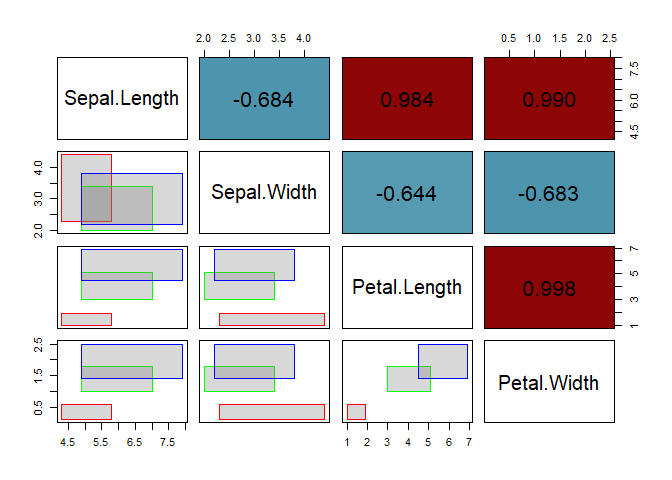

Overview
AIDA provides tools for the analysis of interval-valued data, including construction, visualization, robust estimation, and outlier detection. The package is built around the intData class and is designed to support methodological research and applied workflows involving interval-valued data.
AIDA currently includes functionality for:
- Construction of interval-valued datasets
- Interval-valued covariance estimation based on Mallows distance
- Interval Minimum Covariance Determinant (IMCD) estimator
- Robust squared Interval-Mahalanobis distance
- Outlier detection based on robust distances
- Visualization tools for interval data
Installation
You can install the development version from GitHub:
# install.packages("remotes")
remotes::install_github("catarinaploureiro/AIDA")Minimal Example
library(AIDA)
# Create an intData object from the iris dataset, using the Species column as
# grouping variable. We also specify the latent distribution as "General" to
# estimate the parameters based on the microdata.
data(iris)
iris_int <- micro2intData(iris[,1:4], iris$Species, LatentCase = "General")
# Check the parameters of the latent distribution
iris_int@LatentParam
#> [[1]]
#> [,1] [,2] [,3] [,4]
#> [1,] 0.1835903 0.1554921 0.1660354 0.1990067
#> [2,] 0.1554921 0.1381013 0.1461729 0.1683492
#> [3,] 0.1660354 0.1461729 0.1627440 0.1828199
#> [4,] 0.1990067 0.1683492 0.1828199 0.2704900
#>
#> [[2]]
#> [,1] [,2] [,3] [,4]
#> [1,] 0.01851852 0.00000000 0.00000000 0.0000000
#> [2,] 0.00000000 0.04199507 0.00000000 0.0000000
#> [3,] 0.00000000 0.00000000 0.02913753 0.0000000
#> [4,] 0.00000000 0.00000000 0.00000000 -0.1802821
# Compute the classical covariance and correlation matrices
iris_cov <- int_cov(iris_int)
iris_corr <- cov2cor(iris_cov)
# Pairs plot, the lower triangular shows scatter plots of the four variables,
# while the upper triangular shows the interval correlation matrix.
SYMB.pairs.panels(iris_int, corr = iris_corr, labels = colnames(iris_int))
Vignettes
For a full introduction about the intData class (Oliveira, Pinheiro, and Oliveira (2025)), see:
vignette("intData_examples", package = "AIDA")For examples on the IMCD estimator and outlier detection based on the robust squared Interval-Mahalanobis distance (Loureiro et al. (2026)), see:
vignette("IMCD_examples", package = "AIDA")References
Loureiro, Catarina P., M. Rosário Oliveira, Paula Brito, and Lina Oliveira. 2026. “Minimum Covariance Determinant Estimator and Outlier Detection for Interval-valued Data.” https://arxiv.org/abs/2604.26769.
Oliveira, M. Rosário, Diogo Pinheiro, and Lina Oliveira. 2025. “Location and association measures for interval data based on Mallows’ distance.” https://arxiv.org/abs/2407.05105.